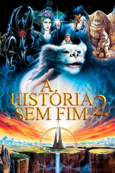

A História Sem Fim II (1990)


Um novo capítulo.

Avaliação (TMDb):


5.7/10 (565 votos)
Avaliação (Usuário):

6.0/10
Outro Título:The Neverending Story II: The Next Chapter (Título Original)
País:Germany, 89 minutos
Idiomas falados:Inglês, Francês, Espanhol, Português
Gênero(s):Drama, Aventura, Fantasia, Família
Diretor(s):George T. Miller
Codec:MPEG-2 (DVD)
Número: 249
Sinopse:
Bastian continua vivendo em seu mundo mágico, Fantasia, que é atacado pelo Nada.
Elenco:
Jonathan Brandis, Kenny Morrison, Clarissa Burt, John Wesley Shipp, Martin Umbach, Alexandra Johnes, Thomas Hill, Helena Michell, Christopher Burton, Patricia Fugger
Tipo de mídia: DVD5,
Legendas: Inglês, Francês, Espanhol, Português
Alugado: Não
Tela: 2.35:1